The Travelling Salesman Problem and Me
love letters written in JavaScriptGoals
- Understand the TSP
- Gain an intuition about TSP algorithms
- Think about effective JavaScript
- Dare to tackle problems that are too hard for us
(That last point is especially important.)
The Problem
Mentioned in 1832 sales literature
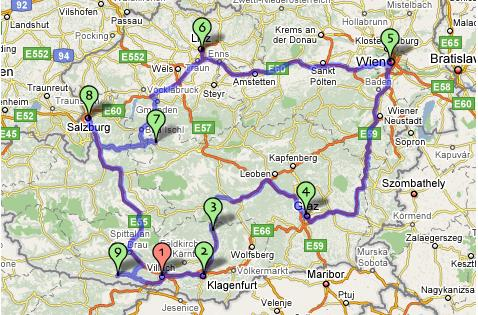
Making it mathematical
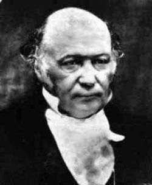 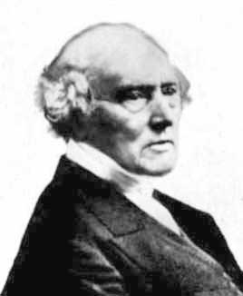
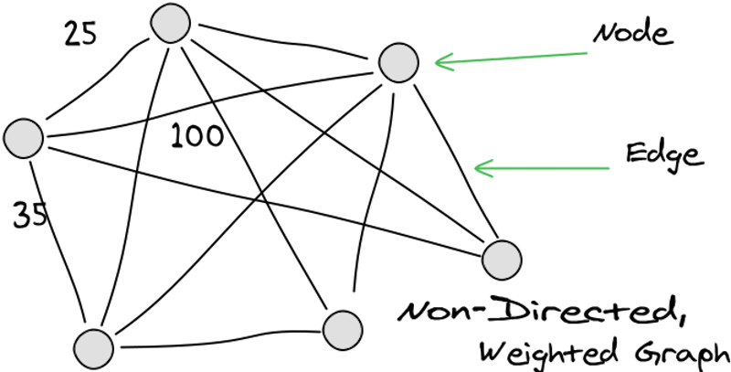
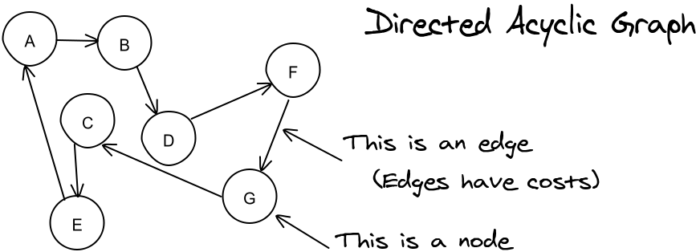
Properties
- NP-hard (as hard as the hardest NP problem)
- Maps to other NP-hard problems: factoring primes, map coloring, scheduling...
- Worth a million bucks
- Traveling salesperson...
Why JavaScript?
- Easy to visualize solutions
- Immediate feedback (no compilation)
- Works on any machine
- Tools are free and increasingly sophisticated
- Maybe I've been using it wrong...
The Algorithms
Random Solution
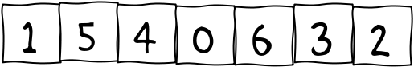- Pro: Good for other algorithms' starting points
- Con: Never gonna be optimal
JavaScript Lesson #1:
Separate ConcernsIterate Random Solutions
- Generate a random solution
- If it's better than the best, keep it.
- Repeat
- Pro: Improves
- Cons: As n grows, you have a better chance of Kanye West admitting he's wrong than you have finding an optimal solution.
JavaScript Lesson #2:
Infinite loops take a little thinking.Brute Force (depth first search)
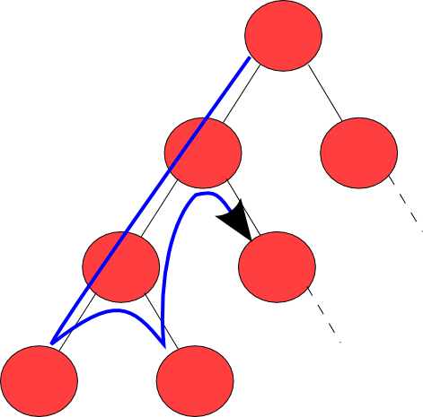- Pro: Given ∞ time, always provides an optimal solution
- Con: O(n!)
O(n!) (Can see why it's NP-hard.)
- n is 3 = 6
- n is 7 = 5040
- n is 9 = 362,880
- n is 11 = 39,916,800
- n is 13 = 6,227,020,800
- n is 75 = 2.48091408113954E109
(> atoms in the universe)
Branch and Bound
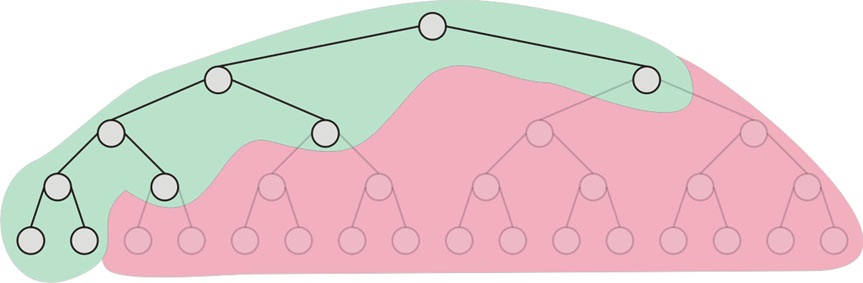Constrain the possibilities
- Visit closest nodes first.
- Stop searching (prune the tree) when there's no way to beat the best.
(minimum possible subtree) - There are other, more exotic, methods as well. (mixed integer programming)
- Pro: Provides an optimal solution if it has time.
- Pro: can be O(2n)
- Con: can be O(2n)
JavaScript Lesson #3:
Favor declarative styles.Dynamic Programming

Solve overlapping subproblems.
Possible solutions
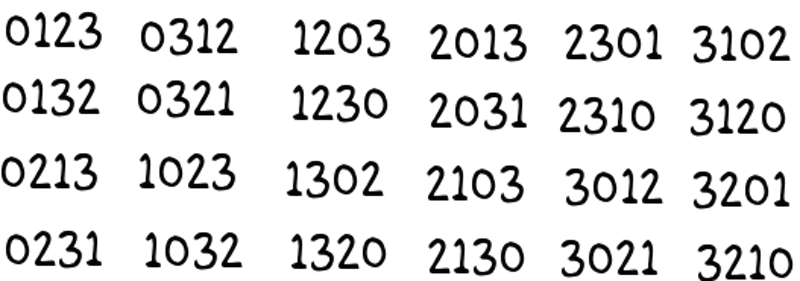Observation: repeating sequences
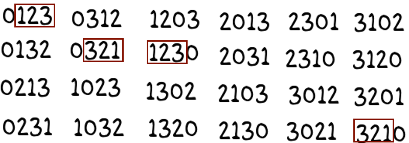- Pro: O(n22n)
- Con: Space requirements explode
- So: Isn't as helpful as you might think.
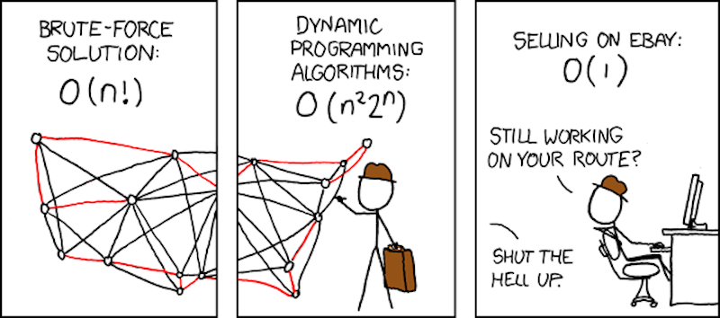
JavaScript Lesson #4:
Take time to understand thisHeuristics
(when you don't have time for an optimal solution)Example: Nearset Neighbor
- Pick a random starting point.
- Go to the nearest, unvisited node.
- Repeat until you're back where you started.
- Pro: Dead simple
- Pro: Good as a sanity check for other heuristic algorithms
- Con: Not optimal
Genetic Algorithm
Our gene/DNA can simply be a valid tour. Examples:
1 -> 5 -> 4 -> 0 -> 6 -> 3 -> 2
3 -> 4 -> 5 -> 0 -> 1 -> 2 -> 6
3 -> 2 -> 0 -> 5 -> 4 -> 6 -> 1
Procedure
- Start with a population of valid genes.
- Pick a subset of survivors, favoring the most fit.
- Create a new generation by "breeding" the survivors.
- Repeat forever.
Crossover
Parent #1
1 -> 5 -> 4 -> 0 -> 6 -> 3 -> 2
Parent #2
3 -> 4 -> × 5 -> 0 -> 1 -> 2 -> 6
Child
3 -> 4 -> 0 -> 6 -> 5 -> 1 -> 2
Mutation
There is some probability that each node will "mutate" (move).Parent #1
1 -> 5 -> 4 -> 0 -> 6 -> 3 -> 2
Child
1 -> 6 -> 5 -> 4 -> 0 -> 3 -> 2
- Pro: Super interesting
- Pro: Intuitively sensible
- Con: Many, many variables to tweak:
- How do you represent the gene?
- How do you swap genetic material?
- How do you choose survivors?
- What are the various probabilities?
- Con: Gets stuck in local minima.
Digression: hill climbing, local minima
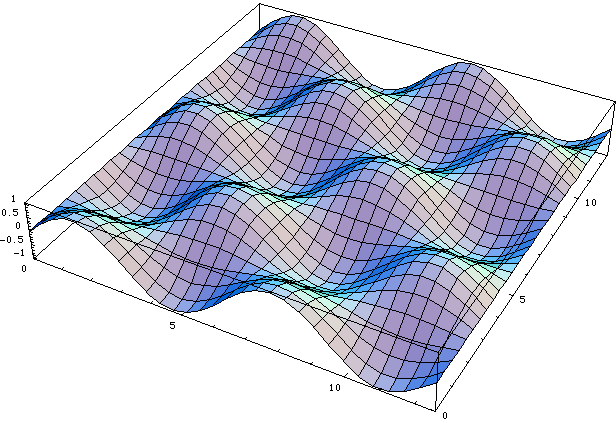JavaScript Lesson #5:
Don't use OOP when it doesn't make sense.Shameless Plug:
Discrete Optimization on coursera.org.
by Pascal Van Hentenryck
Intuition: crossed edges are bad
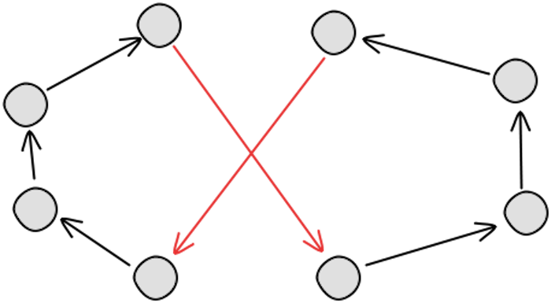Why?
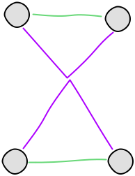
Think about triangles.
Uncross and adjust direction of edges.
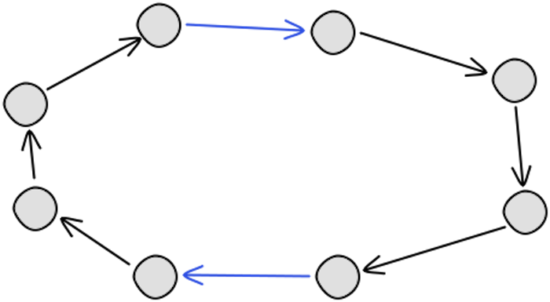2-opt
- Uncrosses crossed edges.
- Actually, will swap edge endpoints anytime it results in an improvement.
- Pro: Simple, Fast
- Pro: Much better than nearest neighbor.
- Con: Not optimal
JavaScript Lesson #6:
Use the right tools.
Browser tools, JSLint/Hint, Grunt.js...
MDN. No W3Schools or MSDN.
Advanced
- 3-opt
- k-opt
- Lin-Kernighan Heuristic
- Linear programming
- Branch and cut